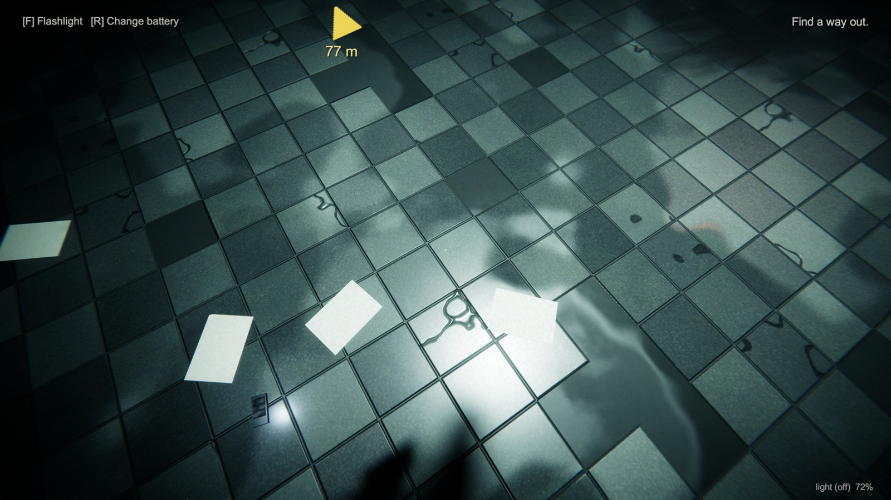
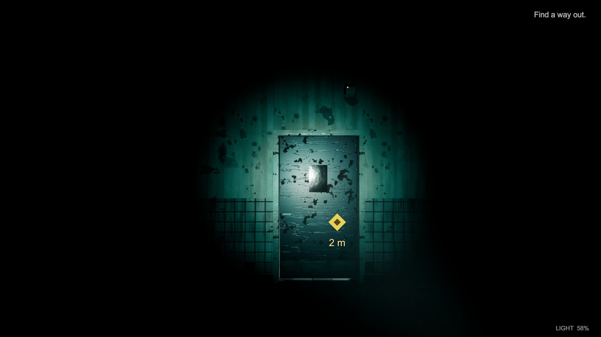
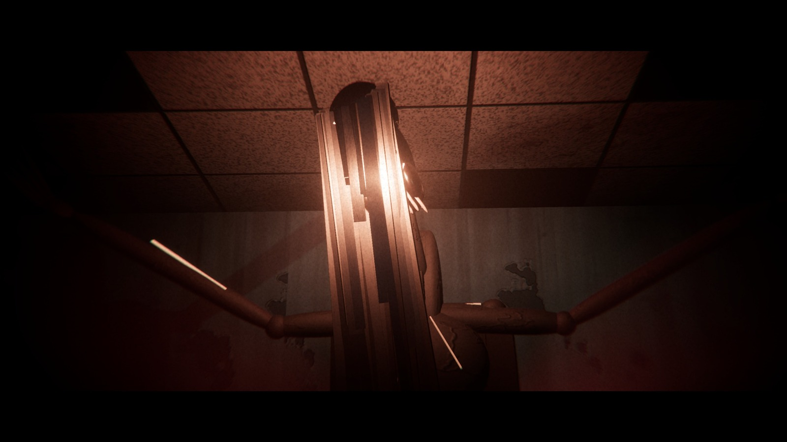
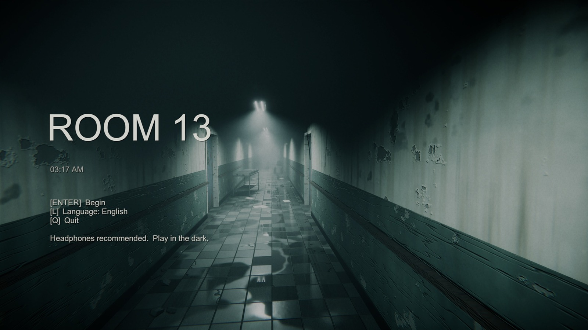
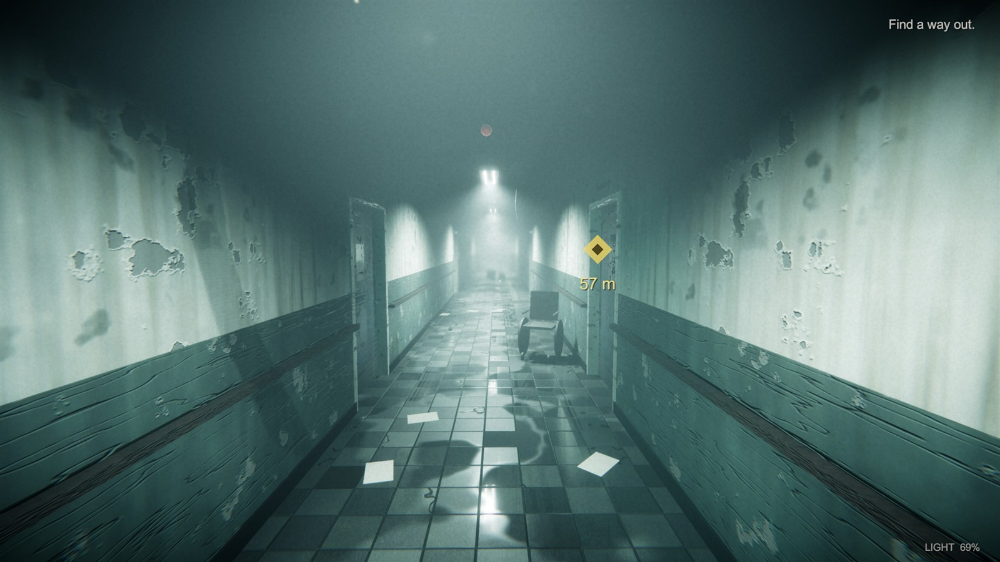
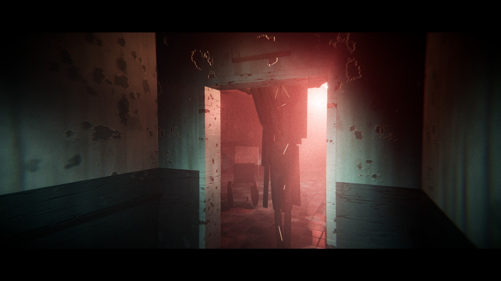
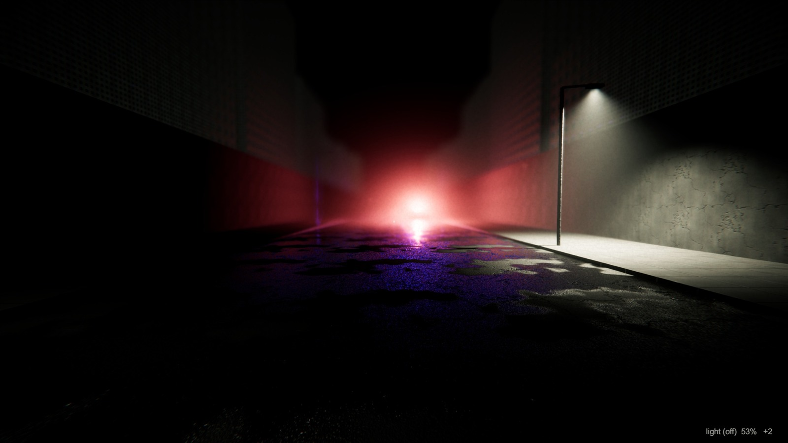
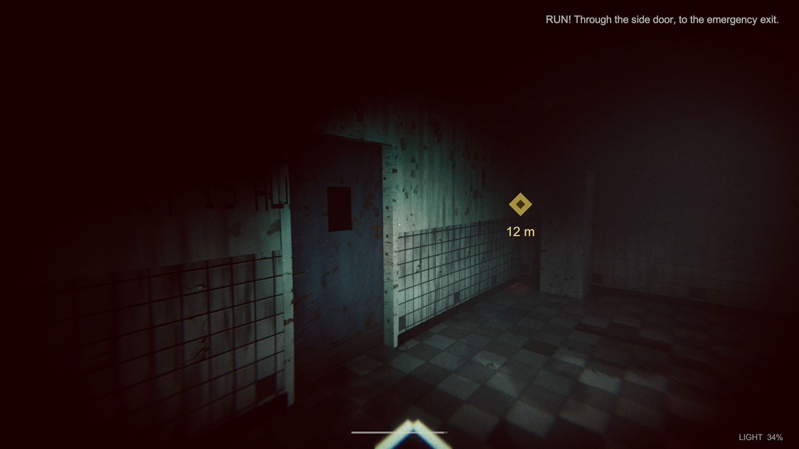
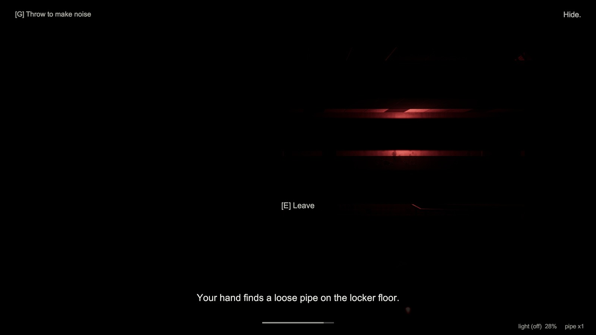
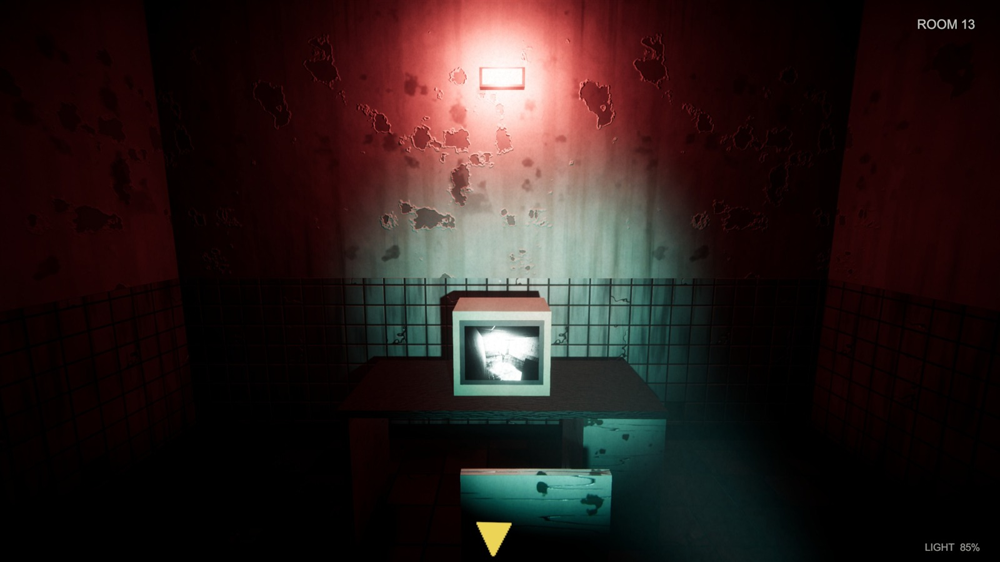

You open your eyes on the cold tiles of the Recovery ward. The phone in your hand says 3:17 AM - No signal. A fluorescent tube stutters overhead and paints the room red every few seconds. Beside you lie scattered papers, a battered flashlight and a plastic access card with only a number embossed so hard it almost cut through: 13.
You thumb the flashlight on and the beam shows every flaw in the corridor: water-stained walls, a wheelchair left mid-turn, doors with narrow wired-glass windows. A yellow diamond on your HUD says the first objective is 57 m away. In the security room, three CRT monitors show corridors you have not walked yet - and on one of them, thirty seconds from now, you are already standing there. Somewhere in the west wing a door opens by itself.
The Patient arrives without footsteps: a tall black silhouette with burning eyes and arms too long for his body. If you look at him he slows to a crawl; if you turn away he is closer. Your only rule is the one written in a child's handwriting on the Records room wall: keep the light on him. Back away with the beam on his face through the side door, sprint west with your lungs burning, curl into a laundry locker with the light off and your hand around a loose pipe while his breath moves along the metal door - then throw the pipe and slip out the other way.
The deeper you go, the less the building agrees with itself. The Patient file in the Records room lists your photograph, your admission time, and a note that you remember every attempt. Knocking comes three times from a door nobody is behind. And when you finally walk back down the main corridor, there is a new door next to the room where you woke up: ROOM 13.



Double-click ROOM13_Launcher.exe (Play Fullscreen / Play Window / Watch Auto-Play) or run Game\ROOM13.exe, which opens fullscreen. The first screen is the main menu: a slow camera moves through a fogged hospital corridor behind the title ROOM 13 - 03:17 AM and the line "Headphones recommended. Play in the dark."

-windowed is used by the launcher's Window mode.It is 03:17 AM. Patient 013 wakes on the floor of a hospital whose maintenance logs say "The corridor has twelve rooms. The floor plan has twelve rooms. The fire map has twelve rooms. Stop filing reports about a thirteenth door." A tall thing the staff call the Patient does not tolerate light and is only dangerous when unobserved. Previous patients are listed as "Did not wake", "Missing" and "Refused to turn off his torch. Battery failed at 03:52." Patient 013 is different: he remembers every attempt. He must collect a keycard, read his own file, survive the Patient in three set-piece encounters, and find the way out - even though the room that matters most is Room 13 itself.
| Mode | Description |
|---|---|
| Story (default) | Linear 11-stage campaign with automatic checkpoints. Death returns the player to the last checkpoint with the correct items and battery. |
| Window / Fullscreen | Chosen from the launcher or with F11. |
Auto-Play (-autotest) | Built-in autopilot plays the entire game through the same player controls (~7 minutes real time). Used for QA, regression runs and demo capture. |
No difficulty modes in v1.0 (see roadmap).
| Element | What it does |
|---|---|
| Flashlight | The only light source. 100 % battery drains ~0.33 % per second (about 5 minutes per cell). Flickers when low. F toggles, R swaps a spare cell. |
| The Patient | AI enemy. Cannot approach while lit, crawls when observed, hunts when the player is loud or unseen. See the Patient section. |
| Doors & keycards | Doors with LED locks; the Pharmacy keycard opens the Records room; locked doors beep and warn. |
| Lockers | Hiding spots. Inside, the camera is locked to a narrow view, the light must be off, and the Patient may check them. |
| Throwable pipe | Thrown with G / right-mouse. Makes noise where it lands and pulls the Patient toward it. |
| Phone & map | TAB: clock, a note ("Find a way out."), and later the Room 13 notification. |
| Documents | Maintenance request #4471, patient files, staff notes: they deliver the story and teach the rules. |
| CCTV / CRT monitors | Show live feeds and set up scares (watching the monitor 30 s ahead). |
| Light fixtures | States On / Flicker / Off / Broken. The west-wing lights fail behind the player. |

The hospital is one continuous map; the story director drives eleven stages inside it.
| # | Stage | Where / what happens | Objective on screen |
|---|---|---|---|
| 1 | Intro | Recovery ward. Pick up flashlight, phone, access card (13), papers. | Find a way out. |
| 2 | SecurityScare | End of the main corridor, east wing, Security room. CCTV monitors, footprints, a first scare. | Something opened in the west wing. |
| 3 | WestWing | West corridor: lights fail one by one behind you. | Find a way out of the west wing. |
| 4 | Keycard | Pharmacy (right of the west corridor): keycard on the table. | Find a keycard. The pharmacy? |
| 5 | Chase1Body | First Patient chase: light on him, back through the side door to Ward 3, then run west to the emergency exit. | RUN! Through the side door. |
| 6 | LaundrySequence | Hide in a laundry locker, light off, throw the pipe, leave by the lower corridor. | Hide. / Get out through the lower corridor. |
| 7 | Archive | Records room (keycard): the Patient 013 file. | The keycard. Find the RECORDS room. |
| 8 | Psych | Return through corridor B; monitors, three knocks, a door that opens after them. | Go back to the main corridor. |
| 9 | Room13 | Room 13 appears next to where you woke. CRT shows the room. | ROOM 13 |
| 10 | FinalChase | East wing, stairs to B3, tunnels, maintenance door; the Patient hunts. Slide under low pipes. | REACH THE EXIT. |
| 11 | Ending | Exit hall, the exit door, the street under red and blue light; credits. | You escaped the building. |


Keyboard and mouse. The complete layout is in the User Interface section.
| Move / look | Act | Light & items |
|---|---|---|
| WASD move Mouse look Shift sprint C / Ctrl crouch; slide while sprinting (final stage) |
E interact / open / hide / leave locker G / RMB throw H hint Esc pause |
F flashlight R change battery Tab phone / map F11 window / fullscreen |
Reach the exit door at the end of the maintenance tunnels while the Patient is hunting you, and step out into the street. The game then rolls the credits and ends with "No patients were discharged."
You lose when the Patient gets within about 1.15 m of you while he is able to kill. The screen cuts to a short death state and you restart from the last checkpoint (position, items, battery and spares are restored) with an attempt counter that the ending acknowledges. There are no health bars: one mistake is fatal, and that is what makes every decision count.
The street outside glows with red and blue light; the phone buzzes: "ROOM 13 - OCCUPIED". The last caption says "Not the room." The player escaped the building, but the credits make clear the story did not end. The game returns to the main menu.


List of game elements attractive to the player.
This section describes how the game objects behave, how they are controlled and what their properties are - the "mechanics". It is modular: further documents (levels, audio, narrative) can be attached to the concept document.
| Win | Leave the building through the exit door (stage 11). |
| Lose | Caught by the Patient (distance < ~1.15 m while he can kill) → death state → restart from checkpoint. |
| Transition | Story triggers (entering a zone, picking an item, finishing a hide) advance the stage; checkpoints store position, yaw, items, battery and spares. |
| Main focus | Managing light and attention: when to look, when to run, when to hide. |
| Rule | Behaviour |
|---|---|
| Lit | If the Patient is inside the flashlight cone he cannot approach and may flinch or retreat. |
| Observed | If the player is looking at him (line of sight inside the view cone) he is slowed to 1.3 m/s. Look away and he moves at his state speed. |
| Battery | 100 % → 0 at 0.33 %/s. At low charge the flashlight flickers; at 0 the light dies (the HUD "LIGHT" text turns red at ~10 %). A spare cell (R) restores it; the HUD shows "+N" spares. |
| Beam strength | Spot light with ~520 lumens base intensity, with random and scripted flicker. |
| Source | Noise radius |
|---|---|
| Sprint step | 16 m |
| Walk step | 4.5 m |
| Crouch step | 0 (silent) |
| Door, thrown object, object impact, flashlight toggle, scripted | Emit noise events of their own kind that the Patient can investigate. |
| Property | Value |
|---|---|
| Walk / Sprint / Crouch | 2.1 / 5.7 / 1.1 m/s |
| Stamina | 7.5 s of sprint. Regenerates at 1.3 /s standing still and 0.75 /s while moving. At 0 the player is locked out of sprinting until stamina recovers to 35 %; a panting breath plays. |
| Collider height | 1.75 m standing, 1.05 m crouched. Crouching under low pipes is required in the tunnels. |
| Slide (final stage) | While sprinting, press C or Ctrl: a 0.9 s burst (1.45× sprint speed fading to 0.5×) with the body lowered; the player cannot stand while the slide lasts, and stays crouched afterwards if there is a low obstacle overhead. 0.7 s cooldown. |
Menu · Synopsis · Game Play · Player Control · Game Over (Winning and Losing)
| Aspect | Definition |
|---|---|
| Health | None. The player is either alive or caught. Safety comes from distance, light and hiding. |
| Weapons | None. Defensive tools: flashlight (holds the Patient back) and a throwable pipe (distraction). |
| Actions | Walk, sprint, crouch, slide (final stage), look, interact, hide, throw, toggle light, change battery, read documents, use phone / map, request hint, pause. |
| Property | Range | Feedback |
|---|---|---|
| Stamina | 0 - 7.5 s | Thin bar at the bottom of the screen; panting breath when exhausted; sprint locked until 35 %. |
| Battery | 0 - 100 % | "LIGHT 69 % +2" at the bottom right; flicker below ~20 %; red text at ~10 %; dark screen when empty. |
| Spare cells | 0 - n | "+N" next to the light value; "change battery" prompt with an animation. |
| Noise | 0 - 16 m | Footstep loudness and the Patient's reaction; crouching is silent. |
| Posture | Stand / crouch / slide / hidden | Camera height changes, speed changes, locker view when hidden. |
| Fear (Tension) | 0 - 1 | Heartbeat speed and volume, breathing, drone pitch, chase music layer, vignette and chromatic aberration, camera shake. |
| Attempts | 1 - n | Remembered by the story: the ending line counts the attempts. |
| Item | Where | Effect |
|---|---|---|
| Flashlight | Recovery floor | Unlocks light; F toggles. |
| Phone | Recovery floor | Clock, notes, map (Tab). |
| Access card 13 | Recovery floor | Story item; later explains Room 13. |
| Keycard | Pharmacy table | Opens the Records room. |
| Battery cells | Storage, Pharmacy, hospital floor | +100 % light when swapped. |
| Loose pipe | Laundry locker | Throw to distract (G). |
| Documents | Throughout | Lore and hints (Maintenance request #4471, Patient 013 file). |
"A tall black figure with burning eyes. Very long arms. Head bent sideways. HE ONLY MOVES WHEN YOU DONT LOOK. KEEP THE LIGHT ON HIM." - child's drawing in the Records room.
He is a single AI agent that uses a navigation graph of the hospital and a perception model: sight range 13 m, line of sight, noise events, and "is lit / is observed" flags. He opens doors (and waits at locked ones), checks lockers he saw the player enter, and breathes in 3D so the player can hear him before seeing him.
| State | Speed | Behaviour |
|---|---|---|
| Inactive | - | Not in the world (story pauses him). |
| Scripted | cinematic | Under the story director's control (jump-scares, monitors). |
| Patrol | 1.25 m/s | Walks through patrol areas; looks around. |
| Investigate | 2.1 m/s | Heard a noise: goes to the source and stops. |
| Search | 2.1 m/s | Lost the player: searches near the last known position and checks lockers. |
| Chase | 5.3 m/s | Sees the player. Slower than the player's sprint (5.7 m/s) so a clean run can outpace him. |
| Hunt | 6.1 m/s | Always knows where the player is (final chase). Faster than sprint - the player must use the slide and the route. |
| Leaving | - | Withdraws when lit or when the scene ends. |
Observed overrides speed to 1.3 m/s while the player looks at him. Lit prevents approach. Kill distance 1.15 m.
Keyboard + mouse. Keys are grouped by hand position: left hand moves and acts, right hand looks. The worst layout (a laptop without numpad) still works because no key is outside the main block.
| 1 | Objective text (top-right) - now persistent; localised. |
| 2 | Waypoint diamond + distance in metres; becomes an edge arrow pointing at the target when it is off-screen or behind you. Enlarged in v1.0 so it can never be missed. |
| 3 | Light level and spare cells ("LIGHT 69 % +2"). |
| 4 | Context prompts: "[E] Open", "[E] Leave", "change battery", pick-up names. |
RECOVERY · main CORRIDOR · EAST WING · SECURITY · STORAGE · ARCHIVE / RECORDS · WEST WING · PHARMACY · WARD 3 · LAUNDRY (N and S) · lower corridor · STAIRS to B3 · TUNNELS · MAINTENANCE · EXIT HALL · STREET. One continuous map, built from data at start-up by the level builder (rooms, doors, props, lights, decals, nav nodes).

| Document | Role |
|---|---|
| A plastic access card | "White plastic, scratched. No name. No photo. Only a number, embossed so hard it almost cut through: 13." |
| Maintenance request #4471 | Warns about the west wing circuit: "If the lights start going out behind you one by one, do NOT keep walking." |
| Staff notes | "02:50 Patient in 13 asked what day it was... He said: No. Tomorrow." "03:16 Someone knocking. Three times." |
| Patient file 013 | Admitted 03:17. Room 13. "Wakes on the floor of Recovery. Asks for the way out. Finds the room. Patient 013 remembers every attempt." |
| Child's drawing | The tall figure; "HE ONLY MOVES WHEN YOU DONT LOOK" - "KEEP THE LIGHT ON HIM". |
| Area | Notes |
|---|---|
| Engine | Unity 6 (6000.x), HDRP, Mono, legacy Input. |
| Architecture | Bootstrap creates Audio, UI, PostFX, Level and Player; StoryDirector runs the stage coroutines and checkpoints; PatientAI + PatientBody; NavGraph for pathing; NoiseSystem for hearing; LightManager / LightFixture for power states; GameUI builds all UI in code. |
| Procedural content | LevelBuilder (areas, doors, props, nav), TexGen / MaterialLib (textures), HorrorSynth / SynthAudio (sound). |
| Build size | ~181 MB unpacked, ~58 MB zip. |
| Distribution | itch.io, Windows. Zip root: README, ROOM13_Launcher.exe, Game/, .itch.toml. The executable is not code-signed (SmartScreen may warn). |
-autotest plays all 11 stages through the real player controls; the final build reached the Ending stage in ~410 s on every run with 0 exceptions in the player log.| Version | Planned |
|---|---|
| 1.1 | Settings (volume, sensitivity, brightness), gamepad support, more slide / vault set-pieces, accessibility subtitles. |
| 1.2 | Second ending, difficulty modes, speed-run timer and attempt statistics. |
| 2.0 | Extended hospital (new wings), new Patient behaviours, Steam page. |
النوع: رعب نفسي من منظور الشخص الأول، يعتمد على التخفّي والبقاء. لاعب واحد، قصة خطية مدتها نحو 7 دقائق.
الفكرة: أنت المريض 013، تستيقظ في الساعة 3:17 فجرًا في مستشفى مهجور له اثنتا عشرة غرفة وباب ثالث عشر لا ينبغي أن يوجد. كائن طويل أسود لا يتحرك إلا حين لا تنظر إليه، ولا يقترب من الضوء. قاعدتك الوحيدة: أبقِ الضوء عليه واهرب.
غرفة الإنعاش ← غرفة الأمن ← الجناح الغربي ← الصيدلية (بطاقة المفتاح) ← المطاردة الأولى ← المغسلة (اختباء) ← غرفة السجلات ← الجزء النفسي ← ظهور الغرفة 13 ← المطاردة الأخيرة (الأنفاق وباب الصيانة) ← الشارع والخاتمة.
W A S D حركة · الماوس نظر · Shift ركض · C أو Ctrl انحناء/انزلاق · E تفاعل · F الكشاف · R تبديل البطارية · G أو زر الفأرة الأيمن رمي · Tab الهاتف/الخريطة · H تلميح · L اللغة (في القائمة) · Esc إيقاف مؤقت · F11 نافذة/ملء الشاشة.
Unity 6 (HDRP) ولغة C#، ويعمل على Windows 10/11 مع DirectX 12. كل شيء (المراحل والمجسمات والنسيج والصوت) يُولَّد بالكود عند التشغيل، فحجم التنزيل نحو 58 ميغابايت فقط. اللغتان العربية والإنجليزية مدعومتان بالكامل مع تشكيل الحروف والاتجاه من اليمين لليسار.
اللاعب الآلي الداخلي (-autotest) يلعب المراحل الإحدى عشرة كاملة في نحو 410 ثانية بدون أي أخطاء في سجل اللعبة.
التصميم والبرمجة والصوت والمراحل: المهندس فيصل